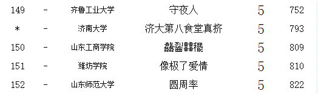
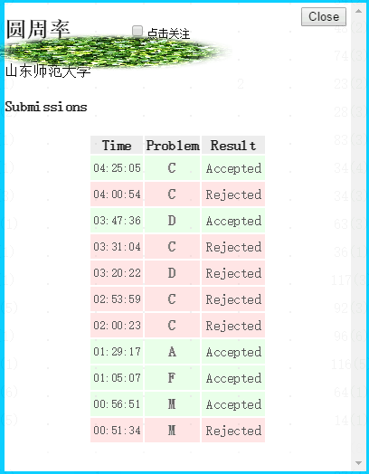

念念不忘，必有回响！
2019.5.12
省赛打铁，就差了不到20分钟的罚时......


2019.5.13
早上收到一队友退队的消息，很遗憾在她唯一一场比赛里没能一起努力拿到牌子
失一队友，如断一臂...
2019.5.23
公主死去了，屠龙的少年仍在燃烧......
公主只是一个梦想与热情的目标载体，公主就像一个引路人。
一个公主的存在能够引发少年的踌躇满志，对远方的热情一旦被激发，
少年心里追求的已不仅仅是公主，更多的还有其他的物质精神追求。
之后至于公主，存在与否，已经没有那么重要了.....
据我理解，屠龙少年，顾名思义，他存在的意义即：屠杀恶龙、斩妖除魔。
至于公主，只是屠龙时顺便救下的而已，是少年为信仰而拼搏过程中的副产物。
所以，无论公主是否得救，勿忘初心：我为打击黑暗而生，那是我终生的信仰.....
那是终我一生的梦想，那是终我一生的远方。
对岸已经没有等待，蝴蝶仍执拗着要飞过沧海.....
2019.5.24
英语四级口语模拟考试，无语......
有设备出问题的小伙伴，调了半天(祈福.jpg)，希望明天正式考试的时候不会出现这样的差错。
匹配：对面是个女生。3:7的男女比例，再加上报口语的本来就女生偏多，也应该是这样。
不过女生英语普遍优于男生，这样我的蹩脚的口语岂不暴露无遗......
刚开始测试听自己录音的时候，(无语.jpg)，操着浓重的地方口音说着中式英语......
自我介绍：一时语塞，瞎啰啰了几句，估计对方听到心里想：对面是个傻子吧......
短文朗读：嗯？这个单词咋读，啥意思啊？哎我没读完咋就到时间了.....
简短回答：我读都没读完，咋知道说了些啥......
个人陈述：用了45秒理解题意（可那是给你思考怎么回答的时间啊！！！？？？）
双人互动：跟对方小姐姐全程在笑，笑自己的口语......(这时候才体会到平时英语老师有多不容易)
She : Hello? I
: Hello.
She & I : hhhhhhhhhhhhh......(真好玩)
She : e...What do you think of ......hhhhhhh... I
: I think just so so.hhhhhhhh.....
She : Just so so ? hhhhhh.... Yeah .....
.......(略去一堆散装oral Emglish)
She : Our English is so terrible! hhhhhhhhh.......(其实她谦虚了，她口语挺好的，反而我啥也想不出来)
I : 凉了啊！ She：凉了，哈哈哈哈啊哈哈，明天是过不了了......
2019.5.25
英语四级口语
真正意识到：平日英语说的少了、学的少了，可以后也没英语课了......
所以，无论做什么事都要尽力去做到最好，这样以后便不会后悔......
山理工第十一届华为杯热身赛爆int了没注意，等反应过来：抱歉，比赛已经结束（结束了5分钟......)
所以要记得测试边界值
2019.5.30
六根清净
眼、耳、鼻、舌、身、意称为六根，也就是生理学上的神经官能。
眼有视神经，耳有听神经，鼻有嗅神经，舌有味神经，身有感触神经，意有脑神经。
这些是心与物的媒介的根本，所以称为六根。
眼贪色、耳贪声、鼻贪香、舌贪味、身贪细滑、意贪乐境
2019.6.1
我太菜了，菜到无法呼吸......
2019.6.16
坚持去做你热爱的事业，以正确且积极的方式，念念不忘，必有回响！
将团体荣耀置于至高无上的地位，神圣而不可侵犯！
2019.7.18
内心浮躁不安稳，想得太多？请你目标专一，努力吧
前方等你的尚且未知，过去已经让你失望了，抓住当下吧
学的太少，学的不精，会拖累队友的，又怎么在别人遇到技术难题时伸去援助之手，如何为长辈争光，如何为晚辈做榜样......
我想念你高一高二上学期的那种状态了，他去哪了，还能再回来吗？我希望是，我希望在任何我需要的时候它就出现......
当一个人度过充实而满足的一天后，自然会不到十点就犯困，一沾枕头就睡得很香。
摧毁一个人的方法非常简单，那就是告诉他还有明天。
因为当你告诉他还有明天的时候，他就不会在今天努力了，他剩下的，只有消耗夜里肝肾脾等器官的工作时间赶deadline了。
2019.9.22
CCPC（秦皇岛站）打铁，大多数队伍都能A出四题，我们只签了一题，毫无比赛体验......
没有DP意识，把DP题生做成模拟，越写越恶心......
容斥尚未学过......
又失去一个队友，心里那么不是滋味......
2019.9.26
早在秦皇岛就收到表姐的消息，说她十月一号就结婚了（举行婚礼）
第一秒还挺替她高兴的，她找到了属于自己的幸福。
可下一秒就开始郁闷——好像我失去了一个疼我的人......
“姐夫”这一职，说好听了是叫姐夫，说难听了就是人贩子
最可气的是，他当着我姐所有亲朋好友的面拐走了我姐，完事儿我们还不能报警
我还希望他生活过得越来越好......
2020.3.17
一月底退队了。
新冠肺炎持续了好长时间，发生了好多事。
再努力一些，跟别人差远了。
再成熟一些，务实精干。